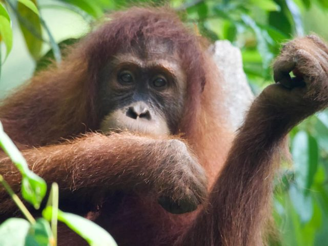

09:00 · Pickup
Into the forest
At 9:00 a.m., our English-speaking guide collects you from your accommodation. After a short walk, you enter the Gunung Leuser National Park section of the Sumatran rainforest.
Jungle Trekking
Five days deep in Gunung Leuser — river treks, tiger tracks, and the Jungle Taxi home.

This 5-day, 4-night jungle observation trek offers a rare glimpse of life in the tropical rainforest. You will explore hidden corners of Gunung Leuser National Park, trekking along rivers and camping in a different spot each night. With luck, you may spot wild elephants and see footprints of the Sumatran tiger. Excellent physical fitness and good health are required — you must be willing to hike for several hours each day and carry all your own equipment.
Day 1
09:00 · Pickup
At 9:00 a.m., our English-speaking guide collects you from your accommodation. After a short walk, you enter the Gunung Leuser National Park section of the Sumatran rainforest.
On the trail
As you hike over hills on the western side of the national park, your guide will point out animal and plant species and explain the rainforest and its biodiversity. With luck, you may spot gibbons, Thomas's leaf monkeys, long-tailed macaques, pig-tailed macaques, flying squirrels, Sumatran peacocks, hornbills, and even wild orangutans along the trail.

15:30 · Jambur Batu River
In the afternoon, around 3:30 PM, you reach the Jambur Batu River and set up camp for the night. Swim, relax, and enjoy afternoon coffee and tea while our team prepares a jungle dinner of local Indonesian cuisine. In the evening, play games or stargaze. Mosquito net, mattresses, pillows, and blanket keep you comfortable through the night.

Day 2
Morning · Landak River
Wake in the morning and, after breakfast, set out on a 6-hour trek through the Landak River area. Keep watch for wildlife. Enjoy a simple lunch and fruit at the top of a hill, then continue to the second campsite beside the Landak River, arriving around 3:30 PM.

Evening · Landak River
Our team prepares the campsite and a jungle dinner of local Indonesian cuisine. Enjoy a refreshing swim in the river.
Day 3
Morning · Upstream
The next morning, after breakfast, trek deeper into the jungle on a 3–4-hour hike further upstream along the Landak River to Uning, a small pond shaped by nature. You will take several breaks to spot fauna and flora and enjoy lunch and fruit. With luck, you may see Sumatran tiger tracks, deer, hornbills, siamang, and slow loris.
Evening · Landak River
After lunch, walk to the new campsite. You spend the third night at a campsite on the Landak River. By now you will be more accustomed to setting up camp, preparing jungle dinner, and working together as a team. Enjoy the evening at camp playing games or cards with your guides.
Day 4
Morning · Through the jungle
After breakfast, continue trekking through the jungle toward the Bohorok River — around 5 hours. Take lunch amid the atmosphere of the jungle. With luck, you may observe wild orangutans, Sumatran monitor lizards, tortoises, and colourful butterflies.
Evening · Bohorok River
Reach your final campsite, relax and swim, and unwind with tea or coffee while dinner is prepared. Enjoy your last night in the jungle, far from civilization.

Day 5
Morning · Return
Wake late, enjoy breakfast, swim, or simply relax. After lunch, return to Bukit Lawang. Our team prepares the "Jungle Taxi" for a traditional tube rafting trip down the Bohorok River. Your guide then returns you to your accommodation.

Certified English-speaking guide, porter, fresh fruits, lunch 5×, dinner 4×, breakfast 4×, drinking water, mattress, blanket, mosquito net, rafting skipper, tubes
Permit to enter the national park — 150.000 IDR/person
Your camera, Comfortable walking shoes, Backpack, Long trousers & T-shirt, Long socks, Three changes of clothes, Long sleeved sweater, Water shoes, Flip flops, Towel, Torch, Mosquito repellent, Sun cream, Swim wear, Toilet paper
Minimum 3 people. If fewer than 3, it's still possible — extra fees apply.
Get in touch
Whether you are planning dates, checking availability, or putting together a custom itinerary, we are happy to help. There is no pressure — just a conversation.
WhatsApp / Phone